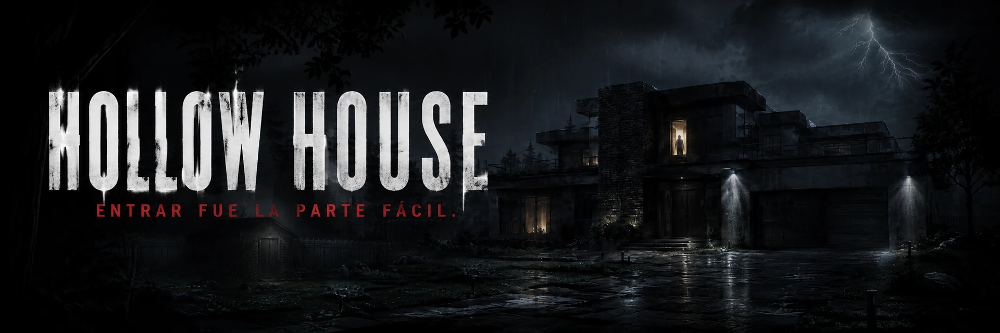

Hollow House

GRAN ACTUALIZACIÓN · VERSIÓN 0.13.40
Una nueva forma
de entrar a Hollow House.
Hollow House es un juego de terror 2D ambientado en Hollow Creek. Jugá solo en el Modo Historia o reuní a tus amigos para La Cacería. Conocé las novedades, las mascotas y las nuevas formas de jugar.
WINDOWS · LINUX · WEB Español · English · Português

DESARROLLO INDEPENDIENTE
Contacto
Consultas, sugerencias y reportes de errores:
Canal oficial de YouTube ↗